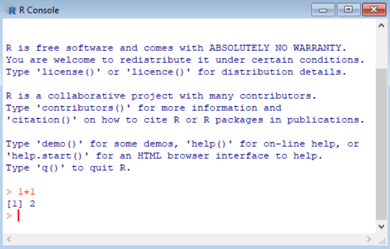
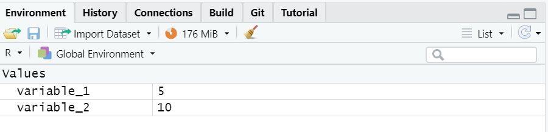

1 + 16 Basic arithmetic, arithmetic operators, and variables
6.1 Questions
How can we perform basic arithmetic operations in R?
What arithmetic operators can be used in R?
How do I assign values to variables?
Are there naming conventions/variable style guides for creating new variables?
6.2 Learning Objectives
Learn how to use R to perform basic arithmetic.
Declare and manipulate variables to store and retrieve data in R.
Master basic arithmetic operations like addition, subtraction, multiplication, and division in R.
Understand the concept of variables and assign numeric values in your R code.
Use appropriate naming conventions for variables.
Differentiate between different variable types (numeric, integer, character) and choose appropriate ones.
6.3 Lesson Content
6.3.1 Basic Arithmetic
To get started, first, we will open R or RStudio (Figure fig-arithmetic-1). In R, go to the console, and in RStudio, head to the console pane. Next, type in a basic arithmetic calculation such as 1 + 1 after the angle bracket (>) and hit “Enter.”
NOTE: According to the Tidyverse Style Guide, there should be a space on either side of the operator.
Examples
a <- 2b <- 4 + c
The output will be observed next to the square bracket containing the number 1 ([1]). The 1 indicates that the indexing begins at position 1. Here, as opposed to Python, which uses zero-based indexing, R uses one-based indexing.

Additionally, to include comments into the code block, we use the hash (#) symbol. Anything written after the code block will be commented out and not run.
# A simple arithmetic calculation (which is not run because of the hash symbol)
1 + 16.3.2 Arithmetic operators
Various arithmetic operators (listed below) can be used in R/RStudio.
| Arithmetic Operator | Description |
|---|---|
+ |
Addition |
- |
Subtraction |
* |
Multiplication |
/ |
Division |
** or ^
|
Exponentiation |
%% |
Modulus (remainder after division) |
%/% |
Integer division |
Example
Create an R script called “my_arithmetic_1.R”
Run the following calculations in the script and save the file to the working directory.
6.3.2.1 Addition
10 + 306.3.2.2 Subtraction
30 - 246.3.2.3 Multiplication
20 * 46.3.2.4 Division
93 / 46.3.2.5 Exponentiation
3^66.3.2.6 Modulus (remainder with division)
94 %% 56.3.2.7 Integer Division
54 %/% 76.3.2.8 Slightly more complex arithmetic operations
5 - 1 + (4 * 3) / 16 * 36.3.3 Variables
Variables are instrumental in programming because they are used as “containers” to store data values. To assign a value to a variable, we can use <− or =. However, most R users prefer to use <−.
- Variables store values for later use in your code. This results in improved readability and efficiency.
- Assign values to variables using the
<-operator (e.g.,x <- 5). - Variable names should be descriptive and avoid special characters.
6.3.3.1 Variable assignment
- Using
<-
variable_1 <- 5
variable_1- Using
=
variable_2 <- 10
variable_2- Reverse the value and variable with
->
15 -> variable_3
variable_3- Assign two variables to one value
variable_4 <- variable_5 <- 30
variable_4
variable_5The output of the variable can then be obtained by:
Typing the variable name and then pressing “Enter,”
Typing “print” with the variable name in brackets,
print(variable), and,Typing “View” with the variable name in brackets,
View(variable).
Both print() and View() are some of the many built-in functions available in R.

print(variable_1)View(variable_2)Output of View() will be seen in the script pane.
6.3.3.2 The assign() and rm() functions
In addition to using the assignment operators (<- and =), we can use the assign() function to assign a value to a variable.
assign("variable_6", 555)
variable_6To remove the assignment of the value to the variable, either delete the variable in the “environment pane” or use the rm() function.
variable_7 <- 159rm(variable_7)After running rm() look at the environment pane to confirm whether variable_7 has been removed.
6.3.3.3 Naming variables
At this point, you may be wondering what conventions are used for naming variables. First, variables need to have meaningful names such as current_temp, time_24_hr, or weight_lbs. However, we need to be mindful of the variable style guide (link) which provides us with the appropriate rules for naming variables.
object_name <- value
Objects must start with a letter and only contain letters and numbers
Some rules to keep in mind are: 1. R is case-sensitive (variable is not the same as Variable), 2. Names similar to typical outputs or functions (TRUE, FALSE, if, or else) cannot be used, 3. Appropriate variable names can contain letters, numbers, dots, and underscores. However, you cannot start with an underscore, number, or dot followed by a number.
6.3.3.4 Valid and invalid variable names
Types of variable names:
- snake_case
- CamelCase
- use.periods
- snake.case.CamelCase_snake_case
Valid names:
time_24_hr
.time24_hr
Invalid names:
_24_hr.time
24_hr_time
.24_hr_time
6.4 Exercises
- In R, calculate
3 + 5and then4 * 6. - Assign the value 10 to a variable called x. Then calculate
x ^ 2. Next, calculate the expression(3 + x) * (x - 1)using the x from before. - Declare a variable to store your age and assign a value to it. Print the variable value.
- Create variables for the length and width of a rectangle and calculate its area.
- Explain the rules for naming variables in R. Provide examples of valid and invalid variable names.
- What is operator precedence in R? How does it work for arithmetic operators?
- What data types can be used for arithmetic operations in R?
- What is the difference between
<-and=for assignment in R?
6.5 Summary
In this chapter, I have demonstrated how to perform basic arithmetic operations and how to use the various arithmetic operators available in R/RStudio. Additionally, the concept of variables and values has been explained, and conventions for appropriately naming variables have been discussed. In the next chapter, we will look at the other types of primary operators in R/RStudio.